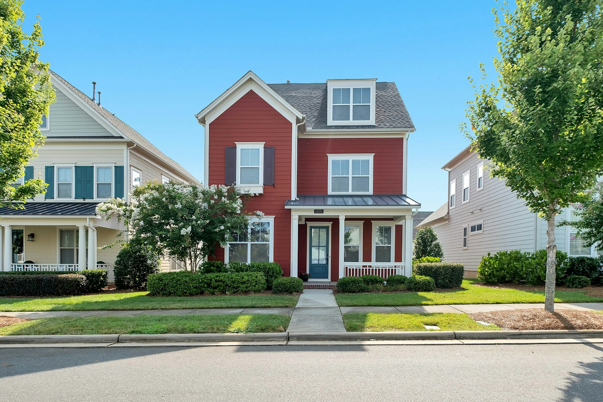

Finding home
From a possibility on the outside to a future that is finally yours.

THE BEGINNING01 / 03
THE EXTERIORPOSSIBILITY
01First, you see
First, you see
a possibility.
A front door. A quiet street. Before it is yours, a house is a place you can imagine yourself becoming.
1 of 3
Click a thumbnail, use the arrows, or swipe the photograph.
THE PERSPECTIVE
The empty room feels full of possibility. The keys at the end turn anticipation into belonging.